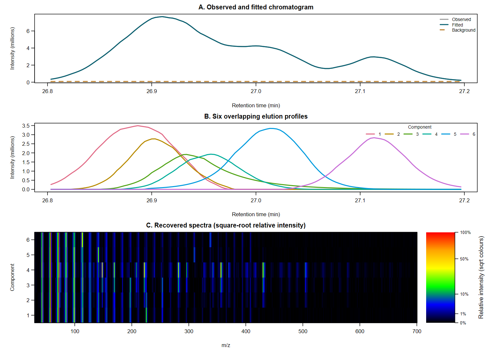

SPARSE NONNEGATIVE MATRIX FACTORIZATION · LOG-CONCAVE PROFILES
Log-concave NMF.
Automatic rank selection.
Fit models to single samples or large multisample experiments, with automatic rank selection, flexible noise models and log-concave shape constraints.
R · Local likelihood updates · Full spectra · Constant & varying PSFs

Automatic rankEstimate how many components the signal supports Peak shape constraintsLog-concave profiles and constant or time-varying PSFs 7 noise familiesGaussian, Poisson, quasi-Poisson, NB2, NB1 and two Gamma models
logconNMF estimates the number of components from the data. Each component has a log-concave profile and a nonnegative spectrum. In a coupled fit the spectrum is shared across samples, while peak shapes, locations and amplitudes can differ on the original sample grids. A penalized likelihood selects the rank under Gaussian, Poisson, quasi-Poisson, negative binomial or Gamma noise. Parallel sample fits and blockwise refinement support experiments stored on disk.
Hyphenated chromatography, such as gas chromatography–mass spectrometry (GC–MS), motivates the model. Several compounds can elute at the same time, so each scan contains a mixture of their mass spectra. Estimate a constant or time-varying point spread function (PSF) for initialization, then recover compound-specific elution profiles and spectra. The same formulation applies to other ordered multichannel signals with nonnegative, single-peaked components.
Automatic rank selection
For a scan-by-channel matrix Y, the fitted signal is H %*% S + B %*% A. Each column of H is a profile across scans and its corresponding row of S contains the channel loadings. The optional term B %*% A represents a smooth baseline. A known additive signal can be supplied as an offset.
Both modes approximately minimize −2 × log-likelihood + κ × λ × d. The weighted log-likelihood sums over the original channels and, for a coupled fit, over samples. Quasi-Poisson divides the Poisson log score by the estimated or supplied dispersion. The default lambda = "gic" sets the penalty to log(p) × log(log(n)) per selection degree of freedom. For one sample, p is the PSF dictionary width and n is the number of scans. For a coupled fit, p and n both equal the total scan count. The optional temporal adjustment κ is 1 under independence.
| Fit | Selection count d for the components |
|---|---|
| One sample |
m × K for K components in m channels |
| Coupled samples |
(m − 1) × G + L for G shared spectra and L detected sample–compound occurrences |
Each shared spectrum has unit sum, giving m − 1 spectral coordinates, and each occurrence contributes one amplitude. In one sample, each spectrum has one occurrence, so G = L = K and the counts agree. Profile shapes and background coefficients carry no separate rank charge. The reported information criteria also count estimated noise parameters.
The search refines candidate profiles and compares alternative ranks using the criterion. For example, overlapping components can fuse when their combined profile is log-concave and the criterion improves. The resulting fit$rank is the estimated number of components or shared spectra. See the mathematical objective.
Installation
install.packages("remotes")
remotes::install_github("tomwenseleers/logconNMF", subdir="logconNMF")Recover overlapping profiles and spectra
This short experimental window contains six co-eluting hydrocarbons. The initial dictionary X places a narrow Gaussian point spread function (PSF) at each possible peak location. The factorization can move away from that shape and gives each retained component its own log-concave profile.
library(logconNMF)
data(gcmsData1)
Y <- gcmsData1
g <- convKernel("gaussian", 65L, list(sigma = 8))
X <- convMatrix(g, nrow(Y))
fit <- logconNMF(Y, X = X, background = matrix(1, nrow(Y), 1L),
family = quasipoisson("identity"), precluster = 16L)
fit$rank # estimated number of components
profiles <- fit$H # scans x components
loadings <- coef(fit) # components x original channels
spectra <- coef(fit, normalize = "l1")
GIC(fit)The columns of profiles sum to one, so each row sum in loadings gives the component’s total fitted signal across scans and channels. Grouping similar channels can speed up the initial search. The reported spectra use every original channel.

Each spectrum is displayed on a square-root relative-intensity scale.
Choose a workflow
| Data and objective | Method |
|---|---|
| Estimate a common response shape from a standard or overlapping signals |
Estimate PSFs with estimatePSF(). The returned sparse design can use a constant or time-varying PSF. |
| Resolve components with individual shapes in one matrix |
Sparse log-concave NMF with logconNMF(). The tutorial covers rank selection, backgrounds and seven noise models. |
| Share spectra across related samples |
Coupled log-concave NMF with logconNMF(). Each sample retains its own scan grid, peak shapes and areas. Components may be absent from individual samples. |
For a known and common PSF, L0glm fits the sparse convolution model directly. GCMSprime uses logconNMF for chromatogram files, retention-index calibration and library search. The algorithm and theory give the objectives, shape constraints and mathematical pseudocode.
Share spectra across samples
A 16-sample GC/MS benchmark uses 100 reference compounds, 1,200 scans and 258 ion channels per sample, including concentration-dependent broadening, sample drift, one acid-like compound and an experimentally derived background and noise scale. The GCMSprime workflow, using logconNMF for its factorization, recovers 734 of 769 true occurrences (peak F1 0.922) in 318.42 s with 16 sample workers. Its robust adjusted log-area R² is 0.995. The coupled tutorial explains shared spectra, sample-specific profiles, missing compounds and the rank-selection objective.
Citation
An article describing the methods implemented in logconNMF is in preparation. If you use the package before the article is formally published, we would appreciate a citation to the package:
Wenseleers T, Vanderaa C (2026). logconNMF: Log-Concave Nonnegative Matrix Factorization with Automatic Rank Selection. R package version 0.1.0.9000, https://tomwenseleers.github.io/logconNMF/.
The Authors and Citation page also provides the citation in BibTeX format. Please also cite the methodological sources linked in the help pages where relevant.